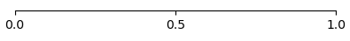
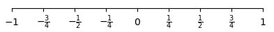
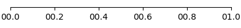
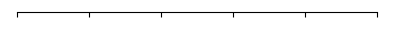
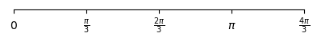

Module plottools.ticks
Setting tick locations and formats.
Axes member functions
set_xticks_delta(): set interval between major xticks.set_yticks_delta(): set interval between major yticks.
set_xticks_log(): set major ticks on a logarithmic x-axis.set_yticks_log(): set major ticks on a logarithmic y-axis.set_xticks_fixed(): set custom xticks at fixed positions.set_yticks_fixed(): set custom yticks at fixed positions.
set_xticks_prefix(): format xticks with SI prefixes.set_yticks_prefix(): format yticks with SI prefixes.
set_xticks_fracs(): format and place xticks as fractions.set_yticks_fracs(): format and place xticks as fractions.
set_xticks_pifracs(): format and place xticks as mutiples of pi.set_yticks_pifracs(): format and place yticks as mutiples of pi.
set_xticks_format(): format xticks according to formatter string.set_yticks_format(): format yticks according to formatter string.
set_xticks_blank(): draw xticks without labeling them.set_yticks_blank(): draw yticks without labeling them.
set_xticks_off(): do not draw and label any xticks.set_yticks_off(): do not draw and label any yticks.
set_minor_xticks_off(): do not draw any minor xticks.set_minor_yticks_off(): do not draw any minor yticks.
Settings
ticks_params(): set default ticks appearance.
Install/uninstall ticks functions
You usually do not need to call these functions. Upon loading the ticks
module, install_ticks() is called automatically.
install_ticks(): install functions of the ticks module in matplotlib.uninstall_ticks(): uninstall all code of the ticks module from matplotlib.
Expand source code
"""
Setting tick locations and formats.
## Axes member functions
- `set_xticks_delta()`: set interval between major xticks.
- `set_yticks_delta()`: set interval between major yticks.

- `set_xticks_log()`: set major ticks on a logarithmic x-axis.
- `set_yticks_log()`: set major ticks on a logarithmic y-axis.
- `set_xticks_fixed()`: set custom xticks at fixed positions.
- `set_yticks_fixed()`: set custom yticks at fixed positions.

- `set_xticks_prefix()`: format xticks with SI prefixes.
- `set_yticks_prefix()`: format yticks with SI prefixes.

- `set_xticks_fracs()`: format and place xticks as fractions.
- `set_yticks_fracs()`: format and place xticks as fractions.

- `set_xticks_pifracs()`: format and place xticks as mutiples of pi.
- `set_yticks_pifracs()`: format and place yticks as mutiples of pi.

- `set_xticks_format()`: format xticks according to formatter string.
- `set_yticks_format()`: format yticks according to formatter string.

- `set_xticks_blank()`: draw xticks without labeling them.
- `set_yticks_blank()`: draw yticks without labeling them.

- `set_xticks_off()`: do not draw and label any xticks.
- `set_yticks_off()`: do not draw and label any yticks.

- `set_minor_xticks_off()`: do not draw any minor xticks.
- `set_minor_yticks_off()`: do not draw any minor yticks.
## Settings
- `ticks_params()`: set default ticks appearance.
## Install/uninstall ticks functions
You usually do not need to call these functions. Upon loading the ticks
module, `install_ticks()` is called automatically.
- `install_ticks()`: install functions of the ticks module in matplotlib.
- `uninstall_ticks()`: uninstall all code of the ticks module from matplotlib.
"""
import numpy as np
from fractions import Fraction
import matplotlib as mpl
import matplotlib.pyplot as plt
import matplotlib.ticker as ticker
def set_xticks_delta(ax, delta):
""" Set interval between major xticks.
Parameters
----------
ax: matplotlib axes
Axes on which the xticks are set.
delta: float
Interval between xticks.
Examples
--------
```
ax.set_xticks_delta(0.5)
```

"""
ax.xaxis.set_major_locator(ticker.MultipleLocator(delta))
def set_yticks_delta(ax, delta):
""" Set interval between major yticks.
Parameters
----------
ax: matplotlib axes
Axes on which the yticks are set.
delta: float
Interval between yticks.
See also
--------
set_xticks_delta()
"""
ax.yaxis.set_major_locator(ticker.MultipleLocator(delta))
def set_xticks_log(ax, subs=(1.0,), numdecs=4, numticks=None):
""" Set major ticks on a logarithmic x-axis.
Parameters
----------
ax: matplotlib axes
Axes on which the xticks are set.
subs: None, 'auto', 'all', or sequence of floats
Multiples of integer powers of ten, where to place major ticks.
numdecs: int
???
numticks: int
Maximum number of ticks placed on the axis.
"""
ax.set_xscale('log')
ax.xaxis.set_major_locator(ticker.LogLocator(10.0, subs, numdecs, numticks))
def set_yticks_log(ax, subs=(1.0,), numdecs=4, numticks=None):
""" Set major ticks on a logarithmic y-axis.
Parameters
----------
ax: matplotlib axes
Axes on which the yticks are set.
subs: None, 'auto', 'all', or sequence of floats
Multiples of integer powers of ten, where to place major ticks.
numdecs: int
???
numticks: int
Maximum number of ticks placed on the axis.
See also
--------
set_xticks_log()
"""
ax.set_yscale('log')
ax.yaxis.set_major_locator(ticker.LogLocator(10.0, subs, numdecs, numticks))
def set_xticks_fixed(ax, locs, labels='%g'):
""" Set custom xticks at fixed positions.
Parameters
----------
ax: matplotlib axes
Axes on which the xticks are set.
locs: list of floats
Locations of xticks.
labels: string or list of strings
Either a format string (e.g. '%.1f') or a list of labels
for each tick position in `locs`.
Notes
-----
On logarithmic axis you may want to turn off minor ticks, e.g. via
`ax.set_minor_xticks_off()`.
Examples
--------
Fixed locations:
```
ax.set_xticks_fixed((0, 0.3, 1))
```

Fixed locations and labels:
```
ax.set_xticks_fixed((0, 0.5, 1), ('a', 'b', 'c'))
```

"""
ax.xaxis.set_major_locator(ticker.FixedLocator(locs))
if isinstance(labels, (tuple, list)):
ax.xaxis.set_major_formatter(ticker.FixedFormatter(labels))
else:
ax.xaxis.set_major_formatter(ticker.FormatStrFormatter(labels))
def set_yticks_fixed(ax, locs, labels='%g'):
""" Set custom yticks at fixed positions.
Parameters
----------
ax: matplotlib axes
Axes on which the yticks are set.
locs: list of floats
Locations of yticks.
labels: string or list of strings
Either a format string (e.g. '%.1f') or a list of labels
for each tick position in `locs`.
Notes
-----
On logarithmic axis you may want to turn off minor ticks, e.g. via
`ax.set_minor_yticks_off()`.
See also
--------
set_xticks_fixed()
"""
ax.yaxis.set_major_locator(ticker.FixedLocator(locs))
if isinstance(labels, (tuple, list)):
ax.yaxis.set_major_formatter(ticker.FixedFormatter(labels))
else:
ax.yaxis.set_major_formatter(ticker.FormatStrFormatter(labels))
def prefix_formatter(x, pos):
""" Function formatter used by `set_xticks_prefix()` and `set_yticks_prefix()`.
"""
if x <= 0:
return '%g' % x
prefixes = {-4: 'p', -3: 'n', -2: u'\u00B5', -1: 'm', 0: '', 1: 'k', 2: 'M', 3: 'G', 4: 'T'}
if plt.rcParams['text.usetex']:
prefixes[-2] = r'\micro'
e = int(np.log10(x)//3)
prefix = prefixes[e]
if prefix:
if plt.rcParams['text.usetex']:
return u'%g\\,%s' % (x/10**(3*e), prefix)
else:
return u'%g\u2009%s' % (x/10**(3*e), prefix)
else:
return '%g' % x
def set_xticks_prefix(ax):
""" Format xticks with SI prefixes.
Ensures ticks to be numbers between 1 and 999 by appending necessary
SI prefixes. That is, numbers between 1 and 999 are not modified and
are formatted with '%g'. Numbers between 1000 and 999999 are
divdided by 1000 and get an 'k' appended, e.g. 10000 ->
'10k'. Numbers between 0.001 and 0.999 are multiplied with 1000 and
get an 'm' appended, e.g. 0.02 -> '20m'. And so on.
Parameters
----------
ax: matplotlib axes
Axes on which the xticks are set.
Examples
--------
```
ax.set_xscale('log')
ax.set_xlim(1e-6, 1e0)
ax.set_xticks_prefix()
```

"""
ax.xaxis.set_major_formatter(ticker.FuncFormatter(prefix_formatter))
def set_yticks_prefix(ax):
""" Format yticks with SI prefixes.
Ensures ticks to be numbers between 1 and 999 by appending necessary
SI prefixes. That is, numbers between 1 and 999 are not modified and
are formatted with '%g'. Numbers between 1000 and 999999 are
divdided by 1000 and get an 'k' appended, e.g. 10000 ->
'10k'. Numbers between 0.001 and 0.999 are multiplied with 1000 and
get an 'm' appended, e.g. 0.02 -> '20m'. And so on.
Parameters
----------
ax: matplotlib axes
Axes on which the yticks are set.
See also
--------
set_xticks_prefix()
"""
ax.yaxis.set_major_formatter(ticker.FuncFormatter(prefix_formatter))
def fraction_formatter(denominator, factor=1, fstring='', ontop=False):
""" Function formatter used by `set_xticks_fracs()` and `set_yticks_fracs()`.
Parameters
----------
denominator: int
Ticks are located at multiples of factor/denominator.
factor: float
Tick values are interpreted as multiples of factor, i.e.
they are divided by factor, before turning them into fractions.
fstring: string
Textual representation of factor that is appended to the fractions.
ontop: boolean
Place fstring into the numerator instead of after the fraction.
Returns
-------
Function formatter.
"""
def _fraction_formatter(x, pos):
denom = int(np.round(denominator))
num = int(np.round(x*denominator/factor))
f = Fraction(num, denom)
denom = f.denominator
num = f.numerator
sign = ''
if num < 0:
num = -num
sign = '-'
if denom == 1:
if num == 0:
return '$0$'
elif num == 1 and fstring:
return '$%s%s$' % (sign, fstring)
else:
return '$%s%d%s$' % (sign, num, fstring)
else:
if ontop:
if num == 1 and fstring:
return r'$%s\frac{%s}{%d}$' % (sign, fstring, denom)
else:
return r'$%s\frac{%d%s}{%d}$' % (sign, num, fstring, denom)
else:
return r'$%s\frac{%d}{%d}%s$' % (sign, num, denom, fstring)
return _fraction_formatter
def set_xticks_fracs(ax, denominator, factor=1, fstring='', ontop=False):
""" Format and place xticks as fractions.
Parameters
----------
ax: matplotlib axes
Axes on which the xticks are set.
denominator: int
XTicks are located at multiples of factor/denominator.
factor: float
Tick values are interpreted as multiples of factor, i.e.
they are divided by factor, before turning them into fractions.
fstring: string
Textual representation of factor that is appended to the fractions.
ontop: boolean
Place fstring into the numerator instead of after the fraction.
Examples
--------
```
ax.set_xlim(-1, 1)
ax.set_xticks_fracs(4)
```

"""
ax.xaxis.set_major_formatter(ticker.FuncFormatter(fraction_formatter(denominator, factor, fstring, ontop)))
if ax.name == 'polar':
# do not mark 2pi !
ax.xaxis.set_major_locator(ticker.FixedLocator(np.arange(0, 1.99*np.pi, factor/denominator)))
else:
ax.xaxis.set_major_locator(ticker.MultipleLocator(factor/denominator))
pixely = np.abs(np.diff(ax.get_window_extent().get_points()[:,1]))[0]
for label in ax.get_xticklabels():
fs = label.get_fontsize()
label.set_verticalalignment('center')
label.set_y(label.get_position()[1]-1.05*fs/pixely)
def set_yticks_fracs(ax, denominator, factor=1, fstring='', ontop=False):
""" Format and place xticks as fractions.
Parameters
----------
ax: matplotlib axes
Axes on which the xticks are set.
denominator: int
YTicks are located at multiples of factor/denominator.
factor: float
Tick values are interpreted as multiples of factor, i.e.
they are divided by factor, before turning them into fractions.
fstring: string
Textual representation of factor that is appended to the fractions.
ontop: boolean
Place fstring into the numerator instead of after the fraction.
See also
--------
set_xticks_fracs()
"""
ax.yaxis.set_major_locator(ticker.MultipleLocator(factor/denominator))
ax.yaxis.set_major_formatter(ticker.FuncFormatter(fraction_formatter(denominator, factor, fstring, ontop)))
def set_xticks_pifracs(ax, denominator, ontop=False):
""" Format and place xticks as mutiples of pi.
Parameters
----------
ax: matplotlib axes
Axes on which the xticks are set.
denominator: int
XTicks are located at multiples of pi/denominator.
ontop: boolean
Place fstring into the numerator instead of after the fraction.
Examples
--------
```
ax.set_xlim(-np.pi, 2*np.pi)
ax.set_xticks_pifracs(2)
```

Pi in the nominator:
```
ax.set_xlim(0, 4*np.pi/3)
ax.set_xticks_pifracs(3, True)
```

"""
ax.set_xticks_fracs(denominator, np.pi, '\\pi', ontop)
def set_yticks_pifracs(ax, denominator, ontop=False):
""" Format and place yticks as mutiples of pi.
Parameters
----------
ax: matplotlib axes
Axes on which the xticks are set.
denominator: int
YTicks are located at multiples of pi/denominator.
ontop: boolean
Place fstring into the numerator instead of after the fraction.
See also
--------
set_xticks_pifracs()
"""
ax.set_yticks_fracs(denominator, np.pi, '\\pi', ontop)
def set_xticks_format(ax, fs):
""" Format xticks according to formatter string.
Parameters
----------
ax: matplotlib axes
Axes on which the xticks are set.
fs: string
Format string used to format xticks.
Examples
--------
```
ax.set_xticks_format('%04.1f')
```

"""
ax.xaxis.set_major_formatter(ticker.FormatStrFormatter(fs))
def set_yticks_format(ax, fs):
""" Format yticks according to formatter string.
Parameters
----------
ax: matplotlib axes
Axes on which the yticks are set.
fs: string
Format string used to format xticks.
See also
--------
set_xticks_format()
"""
ax.yaxis.set_major_formatter(ticker.FormatStrFormatter(fs))
def set_xticks_blank(ax):
""" Draw xticks without labeling them.
Parameters
----------
ax: matplotlib axes
Axes on which the xticks are set.
See also
--------
plottools.common.common_xlabels()
Examples
--------
```
ax.set_xticks_blank()
```

"""
ax.xaxis.set_major_formatter(ticker.NullFormatter())
def set_yticks_blank(ax):
""" Draw yticks without labeling them.
Parameters
----------
ax: matplotlib axes
Axes on which the yticks are set.
See also
--------
plottools.common.common_ylabels(),
set_xticks_blank()
"""
ax.yaxis.set_major_formatter(ticker.NullFormatter())
def set_xticks_off(ax):
""" Do not draw and label any xticks.
Parameters
----------
ax: matplotlib axes
Axes on which the xticks are set.
Examples
--------
```
ax.set_xticks_off()
```

"""
ax.xaxis.set_major_locator(ticker.NullLocator())
def set_yticks_off(ax):
""" Do not draw and label any yticks.
Parameters
----------
ax: matplotlib axes
Axes on which the yticks are set.
See also
--------
set_xticks_off()
"""
ax.yaxis.set_major_locator(ticker.NullLocator())
def set_minor_xticks_off(ax):
""" Do not draw any minor xticks.
Parameters
----------
ax: matplotlib axes
Axes on which the minor xticks are set.
"""
ax.xaxis.set_minor_locator(ticker.NullLocator())
def set_minor_yticks_off(ax):
""" Do not draw any minor yticks.
Parameters
----------
ax: matplotlib axes
Axes on which the minor yticks are set.
See also
--------
set_minor_xticks_off()
"""
ax.yaxis.set_minor_locator(ticker.NullLocator())
def ticks_params(xtick_minor=None, ytick_minor='same',
xtick_dir=None, ytick_dir='same',
xtick_size=None, ytick_size='same', minor_tick_frac=0.6,
xtick_major_width=None, ytick_major_width='same',
xtick_minor_width=None, ytick_minor_width='same',
xtick_major_pad=None, ytick_major_pad='same',
xtick_alignment=None, ytick_alignment=None,
xtick_color='axes', ytick_color='same',
xtick_labelcolor='ticks', ytick_labelcolor='same',
xtick_labelsize=None, ytick_labelsize='same'):
""" Set default ticks appearance.
Only parameters that are not `None` are updated.
Arguments for ytick parameters with default 'same', are set to the
respective xtick parameter, if that one is supplied. If you want to
set the xtick parameter, but not the ytick parameter, you need to
explicitly set the ytick parameter to `None`.
Call this function *before* you create any matplotlib figure.
Parameters
----------
xtick_minor: bool
Show minor xticks.
Sets rcParams `xtick.minor.visible`.
ytick_minor: bool
Show minor yticks. If 'same' set to the value of `ytick_minor`.
Sets rcParams `ytick.minor.visible`.
xtick_dir: {'in', 'out', 'inout'}
Direction of xticks.
Sets rcParams `xtick.direction`.
ytick_dir: {'in', 'out', 'inout', 'same'}
Direction of yticks. If 'same' set to the value of `xtick_dir`.
Sets rcParams `ytick.direction`.
xtick_size: float
Length of major xticks marks in points.
Sets rcParams `xtick.major.size` and `xtick.minor.size`.
The minor tick size is multiplied with `minor_tick_frac`.
ytick_size: float or 'same'
Length of major yticks in points. If 'same' set to the value of `xtick_size`.
Sets rcParams `ytick.major.size` and `ytick.minor.size`.
The minor ytick size is multiplied with `minor_tick_frac`.
minor_tick_frac: float
Length of minor ticks relative to major tick size.
xtick_major_width: float
Width of major xticks in points.
Sets rcParams `xtick.major.width`.
ytick_major_width: float or 'same'
Width of major yticks in points. If 'same' set to the value of `xtick_major_width`.
Sets rcParams `ytick.major.width`.
xtick_minor_width: float
Width of minor xticks in points.
Sets rcParams `xtick.minor.width`.
ytick_minor_width: float or 'same'
Width of minor yticks in points. If 'same' set to the value of `ytick_minor_width`.
Sets rcParams `ytick.minor.width`.
xtick_major_pad: float
Distance of major xtick labels from major xticks in points.
Sets rcParams `xtick.major.pad`.
ytick_major_pad: float or 'same'
Distance of major ytick labels from major yticks in points.
If 'same' set to the value of `xtick_major_pad`.
Sets rcParams `ytick.major.pad`.
xtick_alignment: {'center', 'left', 'right'}
Alignment of xtick labels relative to xticks.
Sets rcParams `xtick.alignment`.
ytick_alignment: {'center', 'top', 'bottom', 'baseline', 'center_baseline'}
Alignment of ytick labels relative to yticks.
Sets rcParams `ytick.alignment`.
xtick_color: matplotlib color or 'axes'
Color of xticks. If 'axes' set to color of axes (rcParam `axes.edgecolor`).
Sets rcParam `xtick.color`.
ytick_color: matplotlib color, 'axes', or 'same'
Color of yticks. If 'axes' set to color of axes (rcParam `axes.edgecolor`).
If 'same' set to the value of `xtick_color`. Sets rcParam `ytick.color`.
xtick_labelcolor: matplotlib color, 'axes' or 'ticks'
Color of xtick labels. If 'axes' set to color of axes (rcParam `axes.edgecolor`).
If 'ticks' set to color of xticks (rcParam `xtick.color`).
Sets rcParam `xtick.labelcolor`.
ytick_labelcolor: matplotlib color, 'axes', 'ticks', or 'same'
Color of ytick labels. If 'axes' set to color of axes (rcParam `axes.edgecolor`).
If 'ticks' set to color of yticks (rcParam `ytick.color`).
If 'same' set to the value of `xtick_labelcolor`. Sets rcParam `ytick.labelcolor`.
xtick_labelsize: float
Font size of xtick labels. Sets rcParam `xtick.labelsize`.
ytick_labelsize: float or 'same'
Font size of ytick labels. If 'same' set to the value of `xtick_labelsize`.
Sets rcParam `ytick.labelsize`.
"""
if ytick_minor == 'same':
ytick_minor = xtick_minor
if 'xtick.minor.visible' in mpl.rcParams and xtick_minor is not None:
mpl.rcParams['xtick.minor.visible'] = xtick_minor
if 'ytick.minor.visible' in mpl.rcParams and ytick_minor is not None:
mpl.rcParams['ytick.minor.visible'] = ytick_minor
if ytick_dir == 'same':
ytick_dir = xtick_dir
if xtick_dir is not None:
mpl.rcParams['xtick.direction'] = xtick_dir
if ytick_dir is not None:
mpl.rcParams['ytick.direction'] = ytick_dir
if ytick_size == 'same':
ytick_size = xtick_size
if xtick_size is not None:
mpl.rcParams['xtick.major.size'] = xtick_size
mpl.rcParams['xtick.minor.size'] = minor_tick_frac*xtick_size
if ytick_size is not None:
mpl.rcParams['ytick.major.size'] = ytick_size
mpl.rcParams['ytick.minor.size'] = minor_tick_frac*ytick_size
if ytick_major_width == 'same':
ytick_major_width = xtick_major_width
if xtick_major_width is not None:
mpl.rcParams['xtick.major.width'] = xtick_major_width
if ytick_major_width is not None:
mpl.rcParams['ytick.major.width'] = ytick_major_width
if ytick_minor_width == 'same':
ytick_minor_width = xtick_minor_width
if xtick_minor_width is not None:
mpl.rcParams['xtick.minor.width'] = xtick_minor_width
if ytick_minor_width is not None:
mpl.rcParams['ytick.minor.width'] = ytick_minor_width
if ytick_major_pad == 'same':
ytick_major_pad = xtick_major_pad
if xtick_major_pad is not None:
mpl.rcParams['xtick.major.pad'] = xtick_major_pad
if ytick_major_pad is not None:
mpl.rcParams['ytick.major.pad'] = ytick_major_pad
if 'xtick.alignment' in mpl.rcParams and xtick_alignment is not None:
mpl.rcParams['xtick.alignment'] = xtick_alignment
if 'ytick.alignment' in mpl.rcParams and ytick_alignment is not None:
mpl.rcParams['ytick.alignment'] = ytick_alignment
if ytick_color == 'same':
ytick_color = xtick_color
if xtick_color == 'axes':
mpl.rcParams['xtick.color'] = mpl.rcParams['axes.edgecolor']
elif xtick_color is not None:
mpl.rcParams['xtick.color'] = xtick_color
if ytick_color == 'axes':
mpl.rcParams['ytick.color'] = mpl.rcParams['axes.edgecolor']
elif ytick_color is not None:
mpl.rcParams['ytick.color'] = ytick_color
if ytick_labelcolor == 'same':
ytick_labelcolor = xtick_labelcolor
if 'xtick.labelcolor' in mpl.rcParams:
if xtick_labelcolor == 'axes':
mpl.rcParams['xtick.labelcolor'] = mpl.rcParams['axes.edgecolor']
elif xtick_labelcolor == 'ticks':
mpl.rcParams['xtick.labelcolor'] = mpl.rcParams['xtick.color']
elif xtick_labelcolor is not None:
mpl.rcParams['xtick.labelcolor'] = xtick_labelcolor
if 'ytick.labelcolor' in mpl.rcParams:
if ytick_labelcolor == 'axes':
mpl.rcParams['ytick.labelcolor'] = mpl.rcParams['axes.edgecolor']
elif ytick_labelcolor == 'ticks':
mpl.rcParams['ytick.labelcolor'] = mpl.rcParams['ytick.color']
elif ytick_labelcolor is not None:
mpl.rcParams['ytick.labelcolor'] = ytick_labelcolor
if ytick_labelsize == 'same':
ytick_labelsize = xtick_labelsize
if xtick_labelsize is not None:
mpl.rcParams['xtick.labelsize'] = xtick_labelsize
if ytick_labelsize is not None:
mpl.rcParams['ytick.labelsize'] = ytick_labelsize
def install_ticks():
""" Install ticks functions on matplotlib axes.
This function is also called automatically upon importing the module.
See also
--------
uninstall_ticks()
"""
if not hasattr(mpl.axes.Axes, 'set_xticks_delta'):
mpl.axes.Axes.set_xticks_delta = set_xticks_delta
if not hasattr(mpl.axes.Axes, 'set_yticks_delta'):
mpl.axes.Axes.set_yticks_delta = set_yticks_delta
if not hasattr(mpl.axes.Axes, 'set_xticks_log'):
mpl.axes.Axes.set_xticks_log = set_xticks_log
if not hasattr(mpl.axes.Axes, 'set_yticks_log'):
mpl.axes.Axes.set_yticks_log = set_yticks_log
if not hasattr(mpl.axes.Axes, 'set_xticks_fixed'):
mpl.axes.Axes.set_xticks_fixed = set_xticks_fixed
if not hasattr(mpl.axes.Axes, 'set_yticks_fixed'):
mpl.axes.Axes.set_yticks_fixed = set_yticks_fixed
if not hasattr(mpl.axes.Axes, 'set_xticks_prefix'):
mpl.axes.Axes.set_xticks_prefix = set_xticks_prefix
if not hasattr(mpl.axes.Axes, 'set_yticks_prefix'):
mpl.axes.Axes.set_yticks_prefix = set_yticks_prefix
if not hasattr(mpl.axes.Axes, 'set_xticks_fracs'):
mpl.axes.Axes.set_xticks_fracs = set_xticks_fracs
if not hasattr(mpl.axes.Axes, 'set_yticks_fracs'):
mpl.axes.Axes.set_yticks_fracs = set_yticks_fracs
if not hasattr(mpl.axes.Axes, 'set_xticks_pifracs'):
mpl.axes.Axes.set_xticks_pifracs = set_xticks_pifracs
if not hasattr(mpl.axes.Axes, 'set_yticks_pifracs'):
mpl.axes.Axes.set_yticks_pifracs = set_yticks_pifracs
if not hasattr(mpl.axes.Axes, 'set_xticks_format'):
mpl.axes.Axes.set_xticks_format = set_xticks_format
if not hasattr(mpl.axes.Axes, 'set_yticks_format'):
mpl.axes.Axes.set_yticks_format = set_yticks_format
if not hasattr(mpl.axes.Axes, 'set_xticks_blank'):
mpl.axes.Axes.set_xticks_blank = set_xticks_blank
if not hasattr(mpl.axes.Axes, 'set_yticks_blank'):
mpl.axes.Axes.set_yticks_blank = set_yticks_blank
if not hasattr(mpl.axes.Axes, 'set_xticks_off'):
mpl.axes.Axes.set_xticks_off = set_xticks_off
if not hasattr(mpl.axes.Axes, 'set_yticks_off'):
mpl.axes.Axes.set_yticks_off = set_yticks_off
if not hasattr(mpl.axes.Axes, 'set_minor_xticks_off'):
mpl.axes.Axes.set_minor_xticks_off = set_minor_xticks_off
if not hasattr(mpl.axes.Axes, 'set_minor_yticks_off'):
mpl.axes.Axes.set_minor_yticks_off = set_minor_yticks_off
def uninstall_ticks():
""" Uninstall ticks functions from matplotlib axes.
Call this function to disable anything that was installed by `install_ticks()`.
See also
--------
install_ticks()
"""
if hasattr(mpl.axes.Axes, 'set_xticks_delta'):
delattr(mpl.axes.Axes, 'set_xticks_delta')
if hasattr(mpl.axes.Axes, 'set_yticks_delta'):
delattr(mpl.axes.Axes, 'set_yticks_delta')
if hasattr(mpl.axes.Axes, 'set_xticks_log'):
delattr(mpl.axes.Axes, 'set_xticks_log')
if hasattr(mpl.axes.Axes, 'set_yticks_log'):
delattr(mpl.axes.Axes, 'set_yticks_log')
if hasattr(mpl.axes.Axes, 'set_xticks_fixed'):
delattr(mpl.axes.Axes, 'set_xticks_fixed')
if hasattr(mpl.axes.Axes, 'set_yticks_fixed'):
delattr(mpl.axes.Axes, 'set_yticks_fixed')
if hasattr(mpl.axes.Axes, 'set_xticks_prefix'):
delattr(mpl.axes.Axes, 'set_xticks_prefix')
if hasattr(mpl.axes.Axes, 'set_yticks_prefix'):
delattr(mpl.axes.Axes, 'set_yticks_prefix')
if hasattr(mpl.axes.Axes, 'set_xticks_fracs'):
delattr(mpl.axes.Axes, 'set_xticks_fracs')
if hasattr(mpl.axes.Axes, 'set_yticks_fracs'):
delattr(mpl.axes.Axes, 'set_yticks_fracs')
if hasattr(mpl.axes.Axes, 'set_xticks_pifracs'):
delattr(mpl.axes.Axes, 'set_xticks_pifracs')
if hasattr(mpl.axes.Axes, 'set_yticks_pifracs'):
delattr(mpl.axes.Axes, 'set_yticks_pifracs')
if hasattr(mpl.axes.Axes, 'set_xticks_format'):
delattr(mpl.axes.Axes, 'set_xticks_format')
if hasattr(mpl.axes.Axes, 'set_yticks_format'):
delattr(mpl.axes.Axes, 'set_yticks_format')
if hasattr(mpl.axes.Axes, 'set_xticks_blank'):
delattr(mpl.axes.Axes, 'set_xticks_blank')
if hasattr(mpl.axes.Axes, 'set_yticks_blank'):
delattr(mpl.axes.Axes, 'set_yticks_blank')
if hasattr(mpl.axes.Axes, 'set_xticks_off'):
delattr(mpl.axes.Axes, 'set_xticks_off')
if hasattr(mpl.axes.Axes, 'set_yticks_off'):
delattr(mpl.axes.Axes, 'set_yticks_off')
if hasattr(mpl.axes.Axes, 'set_minor_xticks_off'):
delattr(mpl.axes.Axes, 'set_minor_xticks_off')
if hasattr(mpl.axes.Axes, 'set_minor_yticks_off'):
delattr(mpl.axes.Axes, 'set_minor_yticks_off')
install_ticks()
def demo():
""" Run a demonstration of the ticks module.
"""
fig, axs = plt.subplots(4, 2)
fig.subplots_adjust(wspace=0.2, hspace=0.6)
fig.suptitle('plottools.ticks')
axs[0,0].text(0.1, 0.8, 'ax.set_xticks_delta(1.0)')
axs[0,0].text(0.1, 0.6, 'ax.set_yticks_delta(0.5)')
axs[0,0].set_xticks_delta(1.0)
axs[0,0].set_yticks_delta(0.5)
axs[0,1].text(0.1, 0.8, 'ax.set_xticks_off()')
axs[0,1].text(0.1, 0.6, 'ax.set_yticks_off()')
axs[0,1].set_xticks_off()
axs[0,1].set_yticks_off()
axs[1,0].text(0.1, 0.8, "ax.set_xticks_format('%04.1f')")
axs[1,0].text(0.1, 0.6, "ax.set_yticks_format('%.2f')")
axs[1,0].set_xticks_format('%04.1f')
axs[1,0].set_yticks_format('%.2f')
axs[1,1].text(0.1, 0.8, 'ax.set_xticks_blank()')
axs[1,1].text(0.1, 0.6, 'ax.set_yticks_blank()')
axs[1,1].set_xticks_blank()
axs[1,1].set_yticks_blank()
axs[2,0].text(0.1, 0.8, 'ax.set_xticks_fixed((0, 0.3, 1))')
axs[2,0].text(0.1, 0.6, "ax.set_yticks_fixed((0, 0.5, 1),")
axs[2,0].text(0.1, 0.4, " ('a', 'b', 'c'))")
axs[2,0].set_xticks_fixed((0, 0.3, 1))
axs[2,0].set_yticks_fixed((0, 0.5, 1), ('a', 'b', 'c'))
axs[2,1].text(0.1, 0.8, 'ax.set_xticks_prefix()', transform=axs[2,1].transAxes)
axs[2,1].text(0.1, 0.6, 'ax.set_yticks_prefix()', transform=axs[2,1].transAxes)
axs[2,1].set_xscale('log')
axs[2,1].set_xlim(1e-6, 1e0)
axs[2,1].set_xticks_prefix()
axs[2,1].set_yscale('log')
axs[2,1].set_ylim(1e0, 1e6)
axs[2,1].set_yticks_prefix()
axs[3,0].text(0.1, 0.8, 'ax.set_xticks_fracs(4)', transform=axs[3,0].transAxes)
axs[3,0].text(0.1, 0.6, "ax.set_yticks_fracs(2)", transform=axs[3,0].transAxes)
axs[3,0].set_xlim(-1, 1)
axs[3,0].set_ylim(-1, 1)
axs[3,0].set_xticks_fracs(4)
axs[3,0].set_yticks_fracs(2)
axs[3,1].text(0.1, 0.8, 'ax.set_xticks_pifracs(2)', transform=axs[3,1].transAxes)
axs[3,1].text(0.1, 0.6, "ax.set_yticks_pifracs(3, True)", transform=axs[3,1].transAxes)
axs[3,1].set_xlim(-np.pi, 2*np.pi)
axs[3,1].set_ylim(0, 4*np.pi/3)
axs[3,1].set_xticks_pifracs(2)
axs[3,1].set_yticks_pifracs(3, True)
plt.show()
if __name__ == "__main__":
demo()Functions
def set_xticks_delta(ax, delta)-
Set interval between major xticks.
Parameters
ax:matplotlib axes- Axes on which the xticks are set.
delta:float- Interval between xticks.
Examples
ax.set_xticks_delta(0.5)Expand source code
def set_xticks_delta(ax, delta): """ Set interval between major xticks. Parameters ---------- ax: matplotlib axes Axes on which the xticks are set. delta: float Interval between xticks. Examples -------- ``` ax.set_xticks_delta(0.5) ```  """ ax.xaxis.set_major_locator(ticker.MultipleLocator(delta)) def set_yticks_delta(ax, delta)-
Set interval between major yticks.
Parameters
ax:matplotlib axes- Axes on which the yticks are set.
delta:float- Interval between yticks.
See Also
Expand source code
def set_yticks_delta(ax, delta): """ Set interval between major yticks. Parameters ---------- ax: matplotlib axes Axes on which the yticks are set. delta: float Interval between yticks. See also -------- set_xticks_delta() """ ax.yaxis.set_major_locator(ticker.MultipleLocator(delta)) def set_xticks_log(ax, subs=(1.0,), numdecs=4, numticks=None)-
Set major ticks on a logarithmic x-axis.
Parameters
ax:matplotlib axes- Axes on which the xticks are set.
subs:None, 'auto', 'all',orsequenceoffloats- Multiples of integer powers of ten, where to place major ticks.
numdecs:int- ???
numticks:int- Maximum number of ticks placed on the axis.
Expand source code
def set_xticks_log(ax, subs=(1.0,), numdecs=4, numticks=None): """ Set major ticks on a logarithmic x-axis. Parameters ---------- ax: matplotlib axes Axes on which the xticks are set. subs: None, 'auto', 'all', or sequence of floats Multiples of integer powers of ten, where to place major ticks. numdecs: int ??? numticks: int Maximum number of ticks placed on the axis. """ ax.set_xscale('log') ax.xaxis.set_major_locator(ticker.LogLocator(10.0, subs, numdecs, numticks)) def set_yticks_log(ax, subs=(1.0,), numdecs=4, numticks=None)-
Set major ticks on a logarithmic y-axis.
Parameters
ax:matplotlib axes- Axes on which the yticks are set.
subs:None, 'auto', 'all',orsequenceoffloats- Multiples of integer powers of ten, where to place major ticks.
numdecs:int- ???
numticks:int- Maximum number of ticks placed on the axis.
See Also
Expand source code
def set_yticks_log(ax, subs=(1.0,), numdecs=4, numticks=None): """ Set major ticks on a logarithmic y-axis. Parameters ---------- ax: matplotlib axes Axes on which the yticks are set. subs: None, 'auto', 'all', or sequence of floats Multiples of integer powers of ten, where to place major ticks. numdecs: int ??? numticks: int Maximum number of ticks placed on the axis. See also -------- set_xticks_log() """ ax.set_yscale('log') ax.yaxis.set_major_locator(ticker.LogLocator(10.0, subs, numdecs, numticks)) def set_xticks_fixed(ax, locs, labels='%g')-
Set custom xticks at fixed positions.
Parameters
ax:matplotlib axes- Axes on which the xticks are set.
locs:listoffloats- Locations of xticks.
labels:stringorlistofstrings- Either a format string (e.g. '%.1f') or a list of labels
for each tick position in
locs.
Notes
On logarithmic axis you may want to turn off minor ticks, e.g. via
ax.set_minor_xticks_off().Examples
Fixed locations:
ax.set_xticks_fixed((0, 0.3, 1))
Fixed locations and labels:
ax.set_xticks_fixed((0, 0.5, 1), ('a', 'b', 'c'))Expand source code
def set_xticks_fixed(ax, locs, labels='%g'): """ Set custom xticks at fixed positions. Parameters ---------- ax: matplotlib axes Axes on which the xticks are set. locs: list of floats Locations of xticks. labels: string or list of strings Either a format string (e.g. '%.1f') or a list of labels for each tick position in `locs`. Notes ----- On logarithmic axis you may want to turn off minor ticks, e.g. via `ax.set_minor_xticks_off()`. Examples -------- Fixed locations: ``` ax.set_xticks_fixed((0, 0.3, 1)) ```  Fixed locations and labels: ``` ax.set_xticks_fixed((0, 0.5, 1), ('a', 'b', 'c')) ```  """ ax.xaxis.set_major_locator(ticker.FixedLocator(locs)) if isinstance(labels, (tuple, list)): ax.xaxis.set_major_formatter(ticker.FixedFormatter(labels)) else: ax.xaxis.set_major_formatter(ticker.FormatStrFormatter(labels)) def set_yticks_fixed(ax, locs, labels='%g')-
Set custom yticks at fixed positions.
Parameters
ax:matplotlib axes- Axes on which the yticks are set.
locs:listoffloats- Locations of yticks.
labels:stringorlistofstrings- Either a format string (e.g. '%.1f') or a list of labels
for each tick position in
locs.
Notes
On logarithmic axis you may want to turn off minor ticks, e.g. via
ax.set_minor_yticks_off().See Also
Expand source code
def set_yticks_fixed(ax, locs, labels='%g'): """ Set custom yticks at fixed positions. Parameters ---------- ax: matplotlib axes Axes on which the yticks are set. locs: list of floats Locations of yticks. labels: string or list of strings Either a format string (e.g. '%.1f') or a list of labels for each tick position in `locs`. Notes ----- On logarithmic axis you may want to turn off minor ticks, e.g. via `ax.set_minor_yticks_off()`. See also -------- set_xticks_fixed() """ ax.yaxis.set_major_locator(ticker.FixedLocator(locs)) if isinstance(labels, (tuple, list)): ax.yaxis.set_major_formatter(ticker.FixedFormatter(labels)) else: ax.yaxis.set_major_formatter(ticker.FormatStrFormatter(labels)) def prefix_formatter(x, pos)-
Function formatter used by
set_xticks_prefix()andset_yticks_prefix().Expand source code
def prefix_formatter(x, pos): """ Function formatter used by `set_xticks_prefix()` and `set_yticks_prefix()`. """ if x <= 0: return '%g' % x prefixes = {-4: 'p', -3: 'n', -2: u'\u00B5', -1: 'm', 0: '', 1: 'k', 2: 'M', 3: 'G', 4: 'T'} if plt.rcParams['text.usetex']: prefixes[-2] = r'\micro' e = int(np.log10(x)//3) prefix = prefixes[e] if prefix: if plt.rcParams['text.usetex']: return u'%g\\,%s' % (x/10**(3*e), prefix) else: return u'%g\u2009%s' % (x/10**(3*e), prefix) else: return '%g' % x def set_xticks_prefix(ax)-
Format xticks with SI prefixes.
Ensures ticks to be numbers between 1 and 999 by appending necessary SI prefixes. That is, numbers between 1 and 999 are not modified and are formatted with '%g'. Numbers between 1000 and 999999 are divdided by 1000 and get an 'k' appended, e.g. 10000 -> '10k'. Numbers between 0.001 and 0.999 are multiplied with 1000 and get an 'm' appended, e.g. 0.02 -> '20m'. And so on.
Parameters
ax:matplotlib axes- Axes on which the xticks are set.
Examples
ax.set_xscale('log') ax.set_xlim(1e-6, 1e0) ax.set_xticks_prefix()Expand source code
def set_xticks_prefix(ax): """ Format xticks with SI prefixes. Ensures ticks to be numbers between 1 and 999 by appending necessary SI prefixes. That is, numbers between 1 and 999 are not modified and are formatted with '%g'. Numbers between 1000 and 999999 are divdided by 1000 and get an 'k' appended, e.g. 10000 -> '10k'. Numbers between 0.001 and 0.999 are multiplied with 1000 and get an 'm' appended, e.g. 0.02 -> '20m'. And so on. Parameters ---------- ax: matplotlib axes Axes on which the xticks are set. Examples -------- ``` ax.set_xscale('log') ax.set_xlim(1e-6, 1e0) ax.set_xticks_prefix() ```  """ ax.xaxis.set_major_formatter(ticker.FuncFormatter(prefix_formatter)) def set_yticks_prefix(ax)-
Format yticks with SI prefixes.
Ensures ticks to be numbers between 1 and 999 by appending necessary SI prefixes. That is, numbers between 1 and 999 are not modified and are formatted with '%g'. Numbers between 1000 and 999999 are divdided by 1000 and get an 'k' appended, e.g. 10000 -> '10k'. Numbers between 0.001 and 0.999 are multiplied with 1000 and get an 'm' appended, e.g. 0.02 -> '20m'. And so on.
Parameters
ax:matplotlib axes- Axes on which the yticks are set.
See Also
Expand source code
def set_yticks_prefix(ax): """ Format yticks with SI prefixes. Ensures ticks to be numbers between 1 and 999 by appending necessary SI prefixes. That is, numbers between 1 and 999 are not modified and are formatted with '%g'. Numbers between 1000 and 999999 are divdided by 1000 and get an 'k' appended, e.g. 10000 -> '10k'. Numbers between 0.001 and 0.999 are multiplied with 1000 and get an 'm' appended, e.g. 0.02 -> '20m'. And so on. Parameters ---------- ax: matplotlib axes Axes on which the yticks are set. See also -------- set_xticks_prefix() """ ax.yaxis.set_major_formatter(ticker.FuncFormatter(prefix_formatter)) def fraction_formatter(denominator, factor=1, fstring='', ontop=False)-
Function formatter used by
set_xticks_fracs()andset_yticks_fracs().Parameters
denominator:int- Ticks are located at multiples of factor/denominator.
factor:float- Tick values are interpreted as multiples of factor, i.e. they are divided by factor, before turning them into fractions.
fstring:string- Textual representation of factor that is appended to the fractions.
ontop:boolean- Place fstring into the numerator instead of after the fraction.
Returns
Function formatter.
Expand source code
def fraction_formatter(denominator, factor=1, fstring='', ontop=False): """ Function formatter used by `set_xticks_fracs()` and `set_yticks_fracs()`. Parameters ---------- denominator: int Ticks are located at multiples of factor/denominator. factor: float Tick values are interpreted as multiples of factor, i.e. they are divided by factor, before turning them into fractions. fstring: string Textual representation of factor that is appended to the fractions. ontop: boolean Place fstring into the numerator instead of after the fraction. Returns ------- Function formatter. """ def _fraction_formatter(x, pos): denom = int(np.round(denominator)) num = int(np.round(x*denominator/factor)) f = Fraction(num, denom) denom = f.denominator num = f.numerator sign = '' if num < 0: num = -num sign = '-' if denom == 1: if num == 0: return '$0$' elif num == 1 and fstring: return '$%s%s$' % (sign, fstring) else: return '$%s%d%s$' % (sign, num, fstring) else: if ontop: if num == 1 and fstring: return r'$%s\frac{%s}{%d}$' % (sign, fstring, denom) else: return r'$%s\frac{%d%s}{%d}$' % (sign, num, fstring, denom) else: return r'$%s\frac{%d}{%d}%s$' % (sign, num, denom, fstring) return _fraction_formatter def set_xticks_fracs(ax, denominator, factor=1, fstring='', ontop=False)-
Format and place xticks as fractions.
Parameters
ax:matplotlib axes- Axes on which the xticks are set.
denominator:int- XTicks are located at multiples of factor/denominator.
factor:float- Tick values are interpreted as multiples of factor, i.e. they are divided by factor, before turning them into fractions.
fstring:string- Textual representation of factor that is appended to the fractions.
ontop:boolean- Place fstring into the numerator instead of after the fraction.
Examples
ax.set_xlim(-1, 1) ax.set_xticks_fracs(4)Expand source code
def set_xticks_fracs(ax, denominator, factor=1, fstring='', ontop=False): """ Format and place xticks as fractions. Parameters ---------- ax: matplotlib axes Axes on which the xticks are set. denominator: int XTicks are located at multiples of factor/denominator. factor: float Tick values are interpreted as multiples of factor, i.e. they are divided by factor, before turning them into fractions. fstring: string Textual representation of factor that is appended to the fractions. ontop: boolean Place fstring into the numerator instead of after the fraction. Examples -------- ``` ax.set_xlim(-1, 1) ax.set_xticks_fracs(4) ```  """ ax.xaxis.set_major_formatter(ticker.FuncFormatter(fraction_formatter(denominator, factor, fstring, ontop))) if ax.name == 'polar': # do not mark 2pi ! ax.xaxis.set_major_locator(ticker.FixedLocator(np.arange(0, 1.99*np.pi, factor/denominator))) else: ax.xaxis.set_major_locator(ticker.MultipleLocator(factor/denominator)) pixely = np.abs(np.diff(ax.get_window_extent().get_points()[:,1]))[0] for label in ax.get_xticklabels(): fs = label.get_fontsize() label.set_verticalalignment('center') label.set_y(label.get_position()[1]-1.05*fs/pixely) def set_yticks_fracs(ax, denominator, factor=1, fstring='', ontop=False)-
Format and place xticks as fractions.
Parameters
ax:matplotlib axes- Axes on which the xticks are set.
denominator:int- YTicks are located at multiples of factor/denominator.
factor:float- Tick values are interpreted as multiples of factor, i.e. they are divided by factor, before turning them into fractions.
fstring:string- Textual representation of factor that is appended to the fractions.
ontop:boolean- Place fstring into the numerator instead of after the fraction.
See Also
Expand source code
def set_yticks_fracs(ax, denominator, factor=1, fstring='', ontop=False): """ Format and place xticks as fractions. Parameters ---------- ax: matplotlib axes Axes on which the xticks are set. denominator: int YTicks are located at multiples of factor/denominator. factor: float Tick values are interpreted as multiples of factor, i.e. they are divided by factor, before turning them into fractions. fstring: string Textual representation of factor that is appended to the fractions. ontop: boolean Place fstring into the numerator instead of after the fraction. See also -------- set_xticks_fracs() """ ax.yaxis.set_major_locator(ticker.MultipleLocator(factor/denominator)) ax.yaxis.set_major_formatter(ticker.FuncFormatter(fraction_formatter(denominator, factor, fstring, ontop))) def set_xticks_pifracs(ax, denominator, ontop=False)-
Format and place xticks as mutiples of pi.
Parameters
ax:matplotlib axes- Axes on which the xticks are set.
denominator:int- XTicks are located at multiples of pi/denominator.
ontop:boolean- Place fstring into the numerator instead of after the fraction.
Examples
ax.set_xlim(-np.pi, 2*np.pi) ax.set_xticks_pifracs(2)Pi in the nominator:
ax.set_xlim(0, 4*np.pi/3) ax.set_xticks_pifracs(3, True)
Expand source code
def set_xticks_pifracs(ax, denominator, ontop=False): """ Format and place xticks as mutiples of pi. Parameters ---------- ax: matplotlib axes Axes on which the xticks are set. denominator: int XTicks are located at multiples of pi/denominator. ontop: boolean Place fstring into the numerator instead of after the fraction. Examples -------- ``` ax.set_xlim(-np.pi, 2*np.pi) ax.set_xticks_pifracs(2) ```  Pi in the nominator: ``` ax.set_xlim(0, 4*np.pi/3) ax.set_xticks_pifracs(3, True) ```  """ ax.set_xticks_fracs(denominator, np.pi, '\\pi', ontop) def set_yticks_pifracs(ax, denominator, ontop=False)-
Format and place yticks as mutiples of pi.
Parameters
ax:matplotlib axes- Axes on which the xticks are set.
denominator:int- YTicks are located at multiples of pi/denominator.
ontop:boolean- Place fstring into the numerator instead of after the fraction.
See Also
Expand source code
def set_yticks_pifracs(ax, denominator, ontop=False): """ Format and place yticks as mutiples of pi. Parameters ---------- ax: matplotlib axes Axes on which the xticks are set. denominator: int YTicks are located at multiples of pi/denominator. ontop: boolean Place fstring into the numerator instead of after the fraction. See also -------- set_xticks_pifracs() """ ax.set_yticks_fracs(denominator, np.pi, '\\pi', ontop) def set_xticks_format(ax, fs)-
Format xticks according to formatter string.
Parameters
ax:matplotlib axes- Axes on which the xticks are set.
fs:string- Format string used to format xticks.
Examples
ax.set_xticks_format('%04.1f')Expand source code
def set_xticks_format(ax, fs): """ Format xticks according to formatter string. Parameters ---------- ax: matplotlib axes Axes on which the xticks are set. fs: string Format string used to format xticks. Examples -------- ``` ax.set_xticks_format('%04.1f') ```  """ ax.xaxis.set_major_formatter(ticker.FormatStrFormatter(fs)) def set_yticks_format(ax, fs)-
Format yticks according to formatter string.
Parameters
ax:matplotlib axes- Axes on which the yticks are set.
fs:string- Format string used to format xticks.
See Also
Expand source code
def set_yticks_format(ax, fs): """ Format yticks according to formatter string. Parameters ---------- ax: matplotlib axes Axes on which the yticks are set. fs: string Format string used to format xticks. See also -------- set_xticks_format() """ ax.yaxis.set_major_formatter(ticker.FormatStrFormatter(fs)) def set_xticks_blank(ax)-
Draw xticks without labeling them.
Parameters
ax:matplotlib axes- Axes on which the xticks are set.
See Also
Examples
ax.set_xticks_blank()Expand source code
def set_xticks_blank(ax): """ Draw xticks without labeling them. Parameters ---------- ax: matplotlib axes Axes on which the xticks are set. See also -------- plottools.common.common_xlabels() Examples -------- ``` ax.set_xticks_blank() ```  """ ax.xaxis.set_major_formatter(ticker.NullFormatter()) def set_yticks_blank(ax)-
Draw yticks without labeling them.
Parameters
ax:matplotlib axes- Axes on which the yticks are set.
See Also
Expand source code
def set_yticks_blank(ax): """ Draw yticks without labeling them. Parameters ---------- ax: matplotlib axes Axes on which the yticks are set. See also -------- plottools.common.common_ylabels(), set_xticks_blank() """ ax.yaxis.set_major_formatter(ticker.NullFormatter()) def set_xticks_off(ax)-
Do not draw and label any xticks.
Parameters
ax:matplotlib axes- Axes on which the xticks are set.
Examples
ax.set_xticks_off()Expand source code
def set_xticks_off(ax): """ Do not draw and label any xticks. Parameters ---------- ax: matplotlib axes Axes on which the xticks are set. Examples -------- ``` ax.set_xticks_off() ```  """ ax.xaxis.set_major_locator(ticker.NullLocator()) def set_yticks_off(ax)-
Do not draw and label any yticks.
Parameters
ax:matplotlib axes- Axes on which the yticks are set.
See Also
Expand source code
def set_yticks_off(ax): """ Do not draw and label any yticks. Parameters ---------- ax: matplotlib axes Axes on which the yticks are set. See also -------- set_xticks_off() """ ax.yaxis.set_major_locator(ticker.NullLocator()) def set_minor_xticks_off(ax)-
Do not draw any minor xticks.
Parameters
ax:matplotlib axes- Axes on which the minor xticks are set.
Expand source code
def set_minor_xticks_off(ax): """ Do not draw any minor xticks. Parameters ---------- ax: matplotlib axes Axes on which the minor xticks are set. """ ax.xaxis.set_minor_locator(ticker.NullLocator()) def set_minor_yticks_off(ax)-
Do not draw any minor yticks.
Parameters
ax:matplotlib axes- Axes on which the minor yticks are set.
See Also
Expand source code
def set_minor_yticks_off(ax): """ Do not draw any minor yticks. Parameters ---------- ax: matplotlib axes Axes on which the minor yticks are set. See also -------- set_minor_xticks_off() """ ax.yaxis.set_minor_locator(ticker.NullLocator()) def ticks_params(xtick_minor=None, ytick_minor='same', xtick_dir=None, ytick_dir='same', xtick_size=None, ytick_size='same', minor_tick_frac=0.6, xtick_major_width=None, ytick_major_width='same', xtick_minor_width=None, ytick_minor_width='same', xtick_major_pad=None, ytick_major_pad='same', xtick_alignment=None, ytick_alignment=None, xtick_color='axes', ytick_color='same', xtick_labelcolor='ticks', ytick_labelcolor='same', xtick_labelsize=None, ytick_labelsize='same')-
Set default ticks appearance.
Only parameters that are not
Noneare updated.Arguments for ytick parameters with default 'same', are set to the respective xtick parameter, if that one is supplied. If you want to set the xtick parameter, but not the ytick parameter, you need to explicitly set the ytick parameter to
None.Call this function before you create any matplotlib figure.
Parameters
xtick_minor:bool- Show minor xticks.
Sets rcParams
xtick.minor.visible. ytick_minor:bool- Show minor yticks. If 'same' set to the value of
ytick_minor. Sets rcParamsytick.minor.visible. xtick_dir:{'in', 'out', 'inout'}- Direction of xticks.
Sets rcParams
xtick.direction. ytick_dir:{'in', 'out', 'inout', 'same'}- Direction of yticks. If 'same' set to the value of
xtick_dir. Sets rcParamsytick.direction. xtick_size:float- Length of major xticks marks in points.
Sets rcParams
xtick.major.sizeandxtick.minor.size. The minor tick size is multiplied withminor_tick_frac. ytick_size:floator'same'- Length of major yticks in points. If 'same' set to the value of
xtick_size. Sets rcParamsytick.major.sizeandytick.minor.size. The minor ytick size is multiplied withminor_tick_frac. minor_tick_frac:float- Length of minor ticks relative to major tick size.
xtick_major_width:float- Width of major xticks in points.
Sets rcParams
xtick.major.width. ytick_major_width:floator'same'- Width of major yticks in points. If 'same' set to the value of
xtick_major_width. Sets rcParamsytick.major.width. xtick_minor_width:float- Width of minor xticks in points.
Sets rcParams
xtick.minor.width. ytick_minor_width:floator'same'- Width of minor yticks in points. If 'same' set to the value of
ytick_minor_width. Sets rcParamsytick.minor.width. xtick_major_pad:float- Distance of major xtick labels from major xticks in points.
Sets rcParams
xtick.major.pad. ytick_major_pad:floator'same'- Distance of major ytick labels from major yticks in points.
If 'same' set to the value of
xtick_major_pad. Sets rcParamsytick.major.pad. xtick_alignment:{'center', 'left', 'right'}- Alignment of xtick labels relative to xticks.
Sets rcParams
xtick.alignment. ytick_alignment:{'center', 'top', 'bottom', 'baseline', 'center_baseline'}- Alignment of ytick labels relative to yticks.
Sets rcParams
ytick.alignment. xtick_color:matplotlib coloror'axes'- Color of xticks. If 'axes' set to color of axes (rcParam
axes.edgecolor). Sets rcParamxtick.color. ytick_color:matplotlib color, 'axes',or'same'- Color of yticks. If 'axes' set to color of axes (rcParam
axes.edgecolor). If 'same' set to the value ofxtick_color. Sets rcParamytick.color. xtick_labelcolor:matplotlib color, 'axes'or'ticks'- Color of xtick labels. If 'axes' set to color of axes (rcParam
axes.edgecolor). If 'ticks' set to color of xticks (rcParamxtick.color). Sets rcParamxtick.labelcolor. ytick_labelcolor:matplotlib color, 'axes', 'ticks',or'same'- Color of ytick labels. If 'axes' set to color of axes (rcParam
axes.edgecolor). If 'ticks' set to color of yticks (rcParamytick.color). If 'same' set to the value ofxtick_labelcolor. Sets rcParamytick.labelcolor. xtick_labelsize:float- Font size of xtick labels. Sets rcParam
xtick.labelsize. ytick_labelsize:floator'same'- Font size of ytick labels. If 'same' set to the value of
xtick_labelsize. Sets rcParamytick.labelsize.
Expand source code
def ticks_params(xtick_minor=None, ytick_minor='same', xtick_dir=None, ytick_dir='same', xtick_size=None, ytick_size='same', minor_tick_frac=0.6, xtick_major_width=None, ytick_major_width='same', xtick_minor_width=None, ytick_minor_width='same', xtick_major_pad=None, ytick_major_pad='same', xtick_alignment=None, ytick_alignment=None, xtick_color='axes', ytick_color='same', xtick_labelcolor='ticks', ytick_labelcolor='same', xtick_labelsize=None, ytick_labelsize='same'): """ Set default ticks appearance. Only parameters that are not `None` are updated. Arguments for ytick parameters with default 'same', are set to the respective xtick parameter, if that one is supplied. If you want to set the xtick parameter, but not the ytick parameter, you need to explicitly set the ytick parameter to `None`. Call this function *before* you create any matplotlib figure. Parameters ---------- xtick_minor: bool Show minor xticks. Sets rcParams `xtick.minor.visible`. ytick_minor: bool Show minor yticks. If 'same' set to the value of `ytick_minor`. Sets rcParams `ytick.minor.visible`. xtick_dir: {'in', 'out', 'inout'} Direction of xticks. Sets rcParams `xtick.direction`. ytick_dir: {'in', 'out', 'inout', 'same'} Direction of yticks. If 'same' set to the value of `xtick_dir`. Sets rcParams `ytick.direction`. xtick_size: float Length of major xticks marks in points. Sets rcParams `xtick.major.size` and `xtick.minor.size`. The minor tick size is multiplied with `minor_tick_frac`. ytick_size: float or 'same' Length of major yticks in points. If 'same' set to the value of `xtick_size`. Sets rcParams `ytick.major.size` and `ytick.minor.size`. The minor ytick size is multiplied with `minor_tick_frac`. minor_tick_frac: float Length of minor ticks relative to major tick size. xtick_major_width: float Width of major xticks in points. Sets rcParams `xtick.major.width`. ytick_major_width: float or 'same' Width of major yticks in points. If 'same' set to the value of `xtick_major_width`. Sets rcParams `ytick.major.width`. xtick_minor_width: float Width of minor xticks in points. Sets rcParams `xtick.minor.width`. ytick_minor_width: float or 'same' Width of minor yticks in points. If 'same' set to the value of `ytick_minor_width`. Sets rcParams `ytick.minor.width`. xtick_major_pad: float Distance of major xtick labels from major xticks in points. Sets rcParams `xtick.major.pad`. ytick_major_pad: float or 'same' Distance of major ytick labels from major yticks in points. If 'same' set to the value of `xtick_major_pad`. Sets rcParams `ytick.major.pad`. xtick_alignment: {'center', 'left', 'right'} Alignment of xtick labels relative to xticks. Sets rcParams `xtick.alignment`. ytick_alignment: {'center', 'top', 'bottom', 'baseline', 'center_baseline'} Alignment of ytick labels relative to yticks. Sets rcParams `ytick.alignment`. xtick_color: matplotlib color or 'axes' Color of xticks. If 'axes' set to color of axes (rcParam `axes.edgecolor`). Sets rcParam `xtick.color`. ytick_color: matplotlib color, 'axes', or 'same' Color of yticks. If 'axes' set to color of axes (rcParam `axes.edgecolor`). If 'same' set to the value of `xtick_color`. Sets rcParam `ytick.color`. xtick_labelcolor: matplotlib color, 'axes' or 'ticks' Color of xtick labels. If 'axes' set to color of axes (rcParam `axes.edgecolor`). If 'ticks' set to color of xticks (rcParam `xtick.color`). Sets rcParam `xtick.labelcolor`. ytick_labelcolor: matplotlib color, 'axes', 'ticks', or 'same' Color of ytick labels. If 'axes' set to color of axes (rcParam `axes.edgecolor`). If 'ticks' set to color of yticks (rcParam `ytick.color`). If 'same' set to the value of `xtick_labelcolor`. Sets rcParam `ytick.labelcolor`. xtick_labelsize: float Font size of xtick labels. Sets rcParam `xtick.labelsize`. ytick_labelsize: float or 'same' Font size of ytick labels. If 'same' set to the value of `xtick_labelsize`. Sets rcParam `ytick.labelsize`. """ if ytick_minor == 'same': ytick_minor = xtick_minor if 'xtick.minor.visible' in mpl.rcParams and xtick_minor is not None: mpl.rcParams['xtick.minor.visible'] = xtick_minor if 'ytick.minor.visible' in mpl.rcParams and ytick_minor is not None: mpl.rcParams['ytick.minor.visible'] = ytick_minor if ytick_dir == 'same': ytick_dir = xtick_dir if xtick_dir is not None: mpl.rcParams['xtick.direction'] = xtick_dir if ytick_dir is not None: mpl.rcParams['ytick.direction'] = ytick_dir if ytick_size == 'same': ytick_size = xtick_size if xtick_size is not None: mpl.rcParams['xtick.major.size'] = xtick_size mpl.rcParams['xtick.minor.size'] = minor_tick_frac*xtick_size if ytick_size is not None: mpl.rcParams['ytick.major.size'] = ytick_size mpl.rcParams['ytick.minor.size'] = minor_tick_frac*ytick_size if ytick_major_width == 'same': ytick_major_width = xtick_major_width if xtick_major_width is not None: mpl.rcParams['xtick.major.width'] = xtick_major_width if ytick_major_width is not None: mpl.rcParams['ytick.major.width'] = ytick_major_width if ytick_minor_width == 'same': ytick_minor_width = xtick_minor_width if xtick_minor_width is not None: mpl.rcParams['xtick.minor.width'] = xtick_minor_width if ytick_minor_width is not None: mpl.rcParams['ytick.minor.width'] = ytick_minor_width if ytick_major_pad == 'same': ytick_major_pad = xtick_major_pad if xtick_major_pad is not None: mpl.rcParams['xtick.major.pad'] = xtick_major_pad if ytick_major_pad is not None: mpl.rcParams['ytick.major.pad'] = ytick_major_pad if 'xtick.alignment' in mpl.rcParams and xtick_alignment is not None: mpl.rcParams['xtick.alignment'] = xtick_alignment if 'ytick.alignment' in mpl.rcParams and ytick_alignment is not None: mpl.rcParams['ytick.alignment'] = ytick_alignment if ytick_color == 'same': ytick_color = xtick_color if xtick_color == 'axes': mpl.rcParams['xtick.color'] = mpl.rcParams['axes.edgecolor'] elif xtick_color is not None: mpl.rcParams['xtick.color'] = xtick_color if ytick_color == 'axes': mpl.rcParams['ytick.color'] = mpl.rcParams['axes.edgecolor'] elif ytick_color is not None: mpl.rcParams['ytick.color'] = ytick_color if ytick_labelcolor == 'same': ytick_labelcolor = xtick_labelcolor if 'xtick.labelcolor' in mpl.rcParams: if xtick_labelcolor == 'axes': mpl.rcParams['xtick.labelcolor'] = mpl.rcParams['axes.edgecolor'] elif xtick_labelcolor == 'ticks': mpl.rcParams['xtick.labelcolor'] = mpl.rcParams['xtick.color'] elif xtick_labelcolor is not None: mpl.rcParams['xtick.labelcolor'] = xtick_labelcolor if 'ytick.labelcolor' in mpl.rcParams: if ytick_labelcolor == 'axes': mpl.rcParams['ytick.labelcolor'] = mpl.rcParams['axes.edgecolor'] elif ytick_labelcolor == 'ticks': mpl.rcParams['ytick.labelcolor'] = mpl.rcParams['ytick.color'] elif ytick_labelcolor is not None: mpl.rcParams['ytick.labelcolor'] = ytick_labelcolor if ytick_labelsize == 'same': ytick_labelsize = xtick_labelsize if xtick_labelsize is not None: mpl.rcParams['xtick.labelsize'] = xtick_labelsize if ytick_labelsize is not None: mpl.rcParams['ytick.labelsize'] = ytick_labelsize def install_ticks()-
Install ticks functions on matplotlib axes.
This function is also called automatically upon importing the module.
See Also
Expand source code
def install_ticks(): """ Install ticks functions on matplotlib axes. This function is also called automatically upon importing the module. See also -------- uninstall_ticks() """ if not hasattr(mpl.axes.Axes, 'set_xticks_delta'): mpl.axes.Axes.set_xticks_delta = set_xticks_delta if not hasattr(mpl.axes.Axes, 'set_yticks_delta'): mpl.axes.Axes.set_yticks_delta = set_yticks_delta if not hasattr(mpl.axes.Axes, 'set_xticks_log'): mpl.axes.Axes.set_xticks_log = set_xticks_log if not hasattr(mpl.axes.Axes, 'set_yticks_log'): mpl.axes.Axes.set_yticks_log = set_yticks_log if not hasattr(mpl.axes.Axes, 'set_xticks_fixed'): mpl.axes.Axes.set_xticks_fixed = set_xticks_fixed if not hasattr(mpl.axes.Axes, 'set_yticks_fixed'): mpl.axes.Axes.set_yticks_fixed = set_yticks_fixed if not hasattr(mpl.axes.Axes, 'set_xticks_prefix'): mpl.axes.Axes.set_xticks_prefix = set_xticks_prefix if not hasattr(mpl.axes.Axes, 'set_yticks_prefix'): mpl.axes.Axes.set_yticks_prefix = set_yticks_prefix if not hasattr(mpl.axes.Axes, 'set_xticks_fracs'): mpl.axes.Axes.set_xticks_fracs = set_xticks_fracs if not hasattr(mpl.axes.Axes, 'set_yticks_fracs'): mpl.axes.Axes.set_yticks_fracs = set_yticks_fracs if not hasattr(mpl.axes.Axes, 'set_xticks_pifracs'): mpl.axes.Axes.set_xticks_pifracs = set_xticks_pifracs if not hasattr(mpl.axes.Axes, 'set_yticks_pifracs'): mpl.axes.Axes.set_yticks_pifracs = set_yticks_pifracs if not hasattr(mpl.axes.Axes, 'set_xticks_format'): mpl.axes.Axes.set_xticks_format = set_xticks_format if not hasattr(mpl.axes.Axes, 'set_yticks_format'): mpl.axes.Axes.set_yticks_format = set_yticks_format if not hasattr(mpl.axes.Axes, 'set_xticks_blank'): mpl.axes.Axes.set_xticks_blank = set_xticks_blank if not hasattr(mpl.axes.Axes, 'set_yticks_blank'): mpl.axes.Axes.set_yticks_blank = set_yticks_blank if not hasattr(mpl.axes.Axes, 'set_xticks_off'): mpl.axes.Axes.set_xticks_off = set_xticks_off if not hasattr(mpl.axes.Axes, 'set_yticks_off'): mpl.axes.Axes.set_yticks_off = set_yticks_off if not hasattr(mpl.axes.Axes, 'set_minor_xticks_off'): mpl.axes.Axes.set_minor_xticks_off = set_minor_xticks_off if not hasattr(mpl.axes.Axes, 'set_minor_yticks_off'): mpl.axes.Axes.set_minor_yticks_off = set_minor_yticks_off def uninstall_ticks()-
Uninstall ticks functions from matplotlib axes.
Call this function to disable anything that was installed by
install_ticks().See Also
Expand source code
def uninstall_ticks(): """ Uninstall ticks functions from matplotlib axes. Call this function to disable anything that was installed by `install_ticks()`. See also -------- install_ticks() """ if hasattr(mpl.axes.Axes, 'set_xticks_delta'): delattr(mpl.axes.Axes, 'set_xticks_delta') if hasattr(mpl.axes.Axes, 'set_yticks_delta'): delattr(mpl.axes.Axes, 'set_yticks_delta') if hasattr(mpl.axes.Axes, 'set_xticks_log'): delattr(mpl.axes.Axes, 'set_xticks_log') if hasattr(mpl.axes.Axes, 'set_yticks_log'): delattr(mpl.axes.Axes, 'set_yticks_log') if hasattr(mpl.axes.Axes, 'set_xticks_fixed'): delattr(mpl.axes.Axes, 'set_xticks_fixed') if hasattr(mpl.axes.Axes, 'set_yticks_fixed'): delattr(mpl.axes.Axes, 'set_yticks_fixed') if hasattr(mpl.axes.Axes, 'set_xticks_prefix'): delattr(mpl.axes.Axes, 'set_xticks_prefix') if hasattr(mpl.axes.Axes, 'set_yticks_prefix'): delattr(mpl.axes.Axes, 'set_yticks_prefix') if hasattr(mpl.axes.Axes, 'set_xticks_fracs'): delattr(mpl.axes.Axes, 'set_xticks_fracs') if hasattr(mpl.axes.Axes, 'set_yticks_fracs'): delattr(mpl.axes.Axes, 'set_yticks_fracs') if hasattr(mpl.axes.Axes, 'set_xticks_pifracs'): delattr(mpl.axes.Axes, 'set_xticks_pifracs') if hasattr(mpl.axes.Axes, 'set_yticks_pifracs'): delattr(mpl.axes.Axes, 'set_yticks_pifracs') if hasattr(mpl.axes.Axes, 'set_xticks_format'): delattr(mpl.axes.Axes, 'set_xticks_format') if hasattr(mpl.axes.Axes, 'set_yticks_format'): delattr(mpl.axes.Axes, 'set_yticks_format') if hasattr(mpl.axes.Axes, 'set_xticks_blank'): delattr(mpl.axes.Axes, 'set_xticks_blank') if hasattr(mpl.axes.Axes, 'set_yticks_blank'): delattr(mpl.axes.Axes, 'set_yticks_blank') if hasattr(mpl.axes.Axes, 'set_xticks_off'): delattr(mpl.axes.Axes, 'set_xticks_off') if hasattr(mpl.axes.Axes, 'set_yticks_off'): delattr(mpl.axes.Axes, 'set_yticks_off') if hasattr(mpl.axes.Axes, 'set_minor_xticks_off'): delattr(mpl.axes.Axes, 'set_minor_xticks_off') if hasattr(mpl.axes.Axes, 'set_minor_yticks_off'): delattr(mpl.axes.Axes, 'set_minor_yticks_off') def demo()-
Run a demonstration of the ticks module.
Expand source code
def demo(): """ Run a demonstration of the ticks module. """ fig, axs = plt.subplots(4, 2) fig.subplots_adjust(wspace=0.2, hspace=0.6) fig.suptitle('plottools.ticks') axs[0,0].text(0.1, 0.8, 'ax.set_xticks_delta(1.0)') axs[0,0].text(0.1, 0.6, 'ax.set_yticks_delta(0.5)') axs[0,0].set_xticks_delta(1.0) axs[0,0].set_yticks_delta(0.5) axs[0,1].text(0.1, 0.8, 'ax.set_xticks_off()') axs[0,1].text(0.1, 0.6, 'ax.set_yticks_off()') axs[0,1].set_xticks_off() axs[0,1].set_yticks_off() axs[1,0].text(0.1, 0.8, "ax.set_xticks_format('%04.1f')") axs[1,0].text(0.1, 0.6, "ax.set_yticks_format('%.2f')") axs[1,0].set_xticks_format('%04.1f') axs[1,0].set_yticks_format('%.2f') axs[1,1].text(0.1, 0.8, 'ax.set_xticks_blank()') axs[1,1].text(0.1, 0.6, 'ax.set_yticks_blank()') axs[1,1].set_xticks_blank() axs[1,1].set_yticks_blank() axs[2,0].text(0.1, 0.8, 'ax.set_xticks_fixed((0, 0.3, 1))') axs[2,0].text(0.1, 0.6, "ax.set_yticks_fixed((0, 0.5, 1),") axs[2,0].text(0.1, 0.4, " ('a', 'b', 'c'))") axs[2,0].set_xticks_fixed((0, 0.3, 1)) axs[2,0].set_yticks_fixed((0, 0.5, 1), ('a', 'b', 'c')) axs[2,1].text(0.1, 0.8, 'ax.set_xticks_prefix()', transform=axs[2,1].transAxes) axs[2,1].text(0.1, 0.6, 'ax.set_yticks_prefix()', transform=axs[2,1].transAxes) axs[2,1].set_xscale('log') axs[2,1].set_xlim(1e-6, 1e0) axs[2,1].set_xticks_prefix() axs[2,1].set_yscale('log') axs[2,1].set_ylim(1e0, 1e6) axs[2,1].set_yticks_prefix() axs[3,0].text(0.1, 0.8, 'ax.set_xticks_fracs(4)', transform=axs[3,0].transAxes) axs[3,0].text(0.1, 0.6, "ax.set_yticks_fracs(2)", transform=axs[3,0].transAxes) axs[3,0].set_xlim(-1, 1) axs[3,0].set_ylim(-1, 1) axs[3,0].set_xticks_fracs(4) axs[3,0].set_yticks_fracs(2) axs[3,1].text(0.1, 0.8, 'ax.set_xticks_pifracs(2)', transform=axs[3,1].transAxes) axs[3,1].text(0.1, 0.6, "ax.set_yticks_pifracs(3, True)", transform=axs[3,1].transAxes) axs[3,1].set_xlim(-np.pi, 2*np.pi) axs[3,1].set_ylim(0, 4*np.pi/3) axs[3,1].set_xticks_pifracs(2) axs[3,1].set_yticks_pifracs(3, True) plt.show()